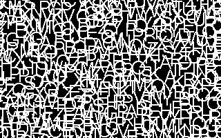
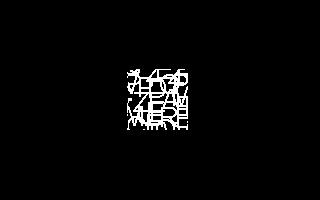

| [ < ] | [ > ] | [ << ] | [ Up ] | [ >> ] | [Top] | [Contents] | [Index] | [ ? ] |
TXTEXT Subfunction 2: Mask - random image clip
Syntax:
TXTEXT 2
TXTEXT subfunction 2 takes no arguments. It first recalls the
saved bounds for the last text written (see section TXTEXT Subfunction 1). It then randomly selects a
block of the current image (usually, the current image is explicitly
reset by the preimage option of the invoking %I command,
see section Create Pictures from CXR) of the same size as the current bounds, and moves it to the
location of the text bounds. All other pixels are cleared to black.
In other words, it pastes a random image clip on top of the last text drawn. Obviously, this feature was designed to create stimulus masks, as in this example demonstrates:
%X[txtext.cxr] %M2%C2 %A[F1,C15] %Q[mylist.txt] ; 'mylist.xt' loads just one pic: lines.pcx $AV93=100 $AV94=100 %I[1,1,160,100,hi!] %I[1,P1,2] #B[2,20]#R #B[3,20]#R |
Here are the three pictures (including mask image) that Cogsys has in memory:
 |
|
 |
Note here that the first picture is loaded from disk by the %Q
command (see section Load Picture List),
and is presumably a mask picture of lines or squiggles, etc. The second
picture is generated by TXTEXT subfunction 1, and write the text
`hi!' in the center of the screen in white characters. Note that
by setting Cogsys variables 93 and 94 to 100, we explicitly
control the size of the bounds that subfunction 1 records. Finally,
TXTEXT subfunction 2 is used to draw a clip of picture 1 (the mask
picture) at the location and size of the last drawn text.
Note also that we display only pictures 2 and 3; typically, in experiments like this the mask picture is used only as a source for image clips, and is never shown directly.
| [ < ] | [ > ] | [ << ] | [ Up ] | [ >> ] | [Top] | [Contents] | [Index] | [ ? ] |